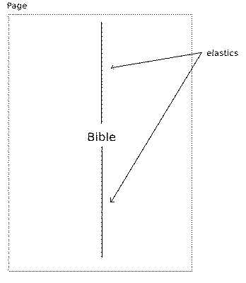

Bibledit supports the use of elastics, or rubber bands, to vertically align some text on a page.
In the example below we wish to print a cover with the word "Bible" in the middle.
To do that, the following code is put in the book "Other Material":
\zelastic \mt Bible \zelastic
The picture below shows how the page looks like and how the elastics have been used to achieve the vertical outline of the word "Bible".

The first "\zelastic" line connects the first elastic to the top of the page. The other side of this elastic is connected to the sign "Bible". Then from this sign, another elastic goes to the bottom of the page. These two elastics will then be stretched, and thus pull the word "Bible" to the middle of the page.
This it how it basically works. More elastics can be added, e.g. if another elastic would be added below the last, the result would be that the word "Bible" would move up.
Consider the following code:
\zelastic \mt Bible \zelastic \mt3 Bible Society
This puts "Bible Society" at the bottom of the page, and "Bible" in the middle, using two elastics. This shows another property of elastics: whenever elastics are used on a page, the whole page is filled, either with text, as in this example, or with white space.
Note. Elastics works in layouts with one column. A feature request for support in two-column layouts can be submitted, if this is needed.